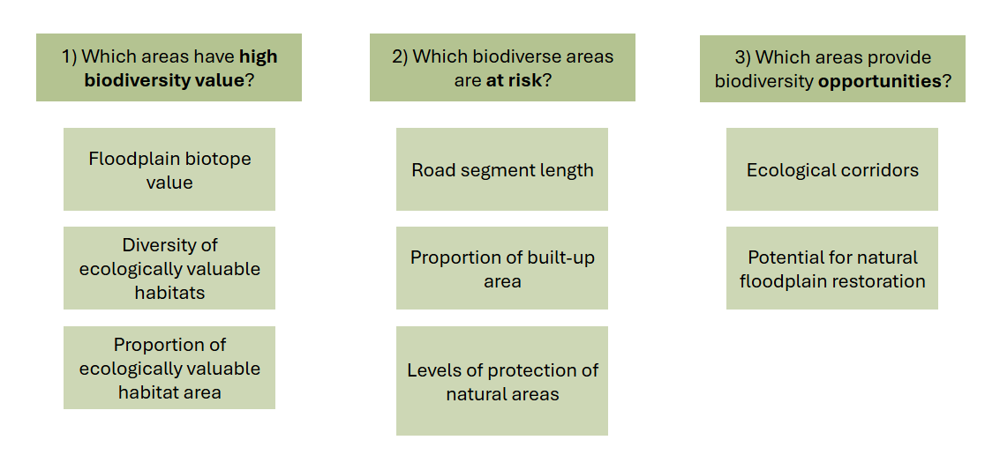
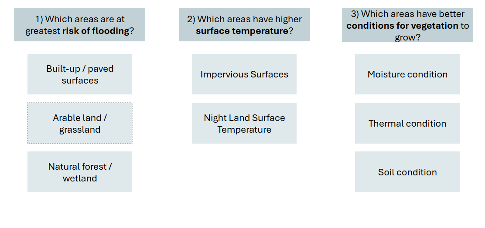
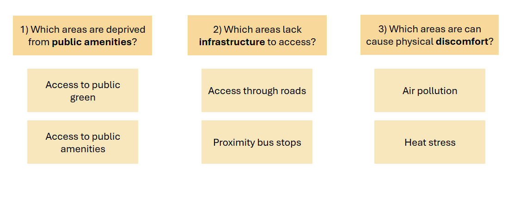

Jablonec nad Nisou and the Bila Nisa stream
Title of your report
Project report of Group D
Introduction
Urban areas across Europe are increasingly challenged by the impacts of climate change, biodiversity loss, and the demand for sustainable development (Nijkamp & Kourtit, 2013). According to (Diaz et al., 2019), in cities the impact of land use on fresh-water ecosystems is especially severe. As climate change is expected to increase the intensity and frequency of extreme weather events, solutions to combat these effects are urgently needed (Ourloglou et al., 2020).
A good solution is through urban streams. Urban streams are expected to have an important role in the mitigation of climate change by buffering extreme temperatures and prevent floods. More importantly, finding nature-based solutions are key and can restore existing strained water systems (Ourloglou et al., 2020). In this context, spatial analytics can play a crucial role in informing climate adaptation and urban planning strategies (Hurlimann & March, 2012). Through methods such as Spatial Multi-Criteria Decision Analysis (S-MCDA) and typology development, planners and designers can better understand urban systems, evaluate trade-offs, and propose the correct targeted interventions.
The ReBioClim project, a European initiativve funded by the Interreg Central Europe Program (Restoring Urban Streams to Promote Biodiversity, Climate Adaptation and to Improve Quality of Life in Cities – EU-Project ReBioClim Launched, 2024), exemplifies this approach by focusing on revitalizing small urban streams. It additionally provides a framework where nature-based solutions can be identified to enhance biodiversity, mitigate climate change effects, and improve urban living conditions (ReBioClim – Leibniz Institute of Ecological Urban and Regional Development, 2024). Running from Juse 2204 to January 2027, the project addresses the challenges of urban stream restroration in four Central European cities, including Jablonec nad Nisou.

In this report, inspired by the ReBioClim project, we focus on the urban streams of Jablonec nad Nisou. Over recent decades, the city has experienced overbuilding, channelization, and neglect of its urban streams, leading to ecological degradation and reduced quality of life. Our objective is to quantitatively assess the current state of these waterways and identify areas with the highest potential for improvement. Through these efforts, we aim to provide a better understanding of where and how to restore the waterways and create green-blue corridors that offer cooling effects, improve air quality, and provide recreational spaces for residents.
Our research centers on the Bílá Nisa stream, and will address the problems we have identified through the lens fo the three following goals: Biodiversity, Climate Adaptation, and Quality of Life. These goals, relevant to our location has led to our main research question:
Where should urban stream restoration be prioritized in Jablonec nad Nisou to maximize biodiversity, climate adaptation, and quality of life?
Our derived subquestions, respective to each goal are then the following:
Where can the ecological quality of the stream area be enhanced?
Which areas are the most in need for flood protection?Where can flood mitigation measures take place?
Where can improvements in quality of life balance stakeholder interests in areas around the stream?
//we will add how the report is structured here after.
Methodology
A important foundation for applying spatial analytics in urban environments is in the careful definition of the area of interest (AOI) and the spatial units used for analysis. The decisions regarding spatial scale, unit configuration, and data resolution directly influences the insights that can be drawn from spatial data. (Dungan et al., 2002) The justification of our area of interest and chosen spatial unit is structured around principles derived from literature, geographical context and data availability. Furthermore, in order to apply a S-MCDA normalized values at a comparable scale are needed, further emphasizing the importance of defining an appropriate spatial unit.
Definition of Spatial Units
To conduct a meaningful spatial analysis, the study area must be divided into standardized spatial units. For example, urban heat island and green infrastructure studies have shown to use a regular grid of 50 x 50 meter cells as the base unit of analysis (Bartesaghi-Koc et al., 2020). On the other hand, (Burdziej, 2019) uses a hexagonal grid where each hexagon has a side length of 100 m, selected based on the size of the study area (Toruń, Poland) and the intended spatial resolution of the study.
Therefore, based on the size of Jablonec nad Nisou and the Bila Nisa stream as well as the following discussed principles affecting the conducted analysis, a spatial unit grid of 100 x 100 meters was chosen. The unit is used for consistency in the assignment of spatial indicators and facilitates the aggregation and comparison of data across the urban stream landscape. The 100 x 100m spatial unit is specific to the scale Jablonec nad Nisou, the resolution of the data collected and relevant literature on stream assessments.
Impact of Scale on Detectable Effects
The spatial resolution of the data we collected significantly shapes the analytical results. Averaging the data collected within the chosen 100 x 100m cells allows for generalized insights, which we found best fitting. It may however still obscure localized effects such as even smaller micro climatic benefits of tree clusters or linear vegetation elements. We chose the trade off that best fits our and balances detail with analytical feasibility.
Resolution and Data Acquisition Method
The resolution of spatial analysis is directly tied to the data acquisition method (Bartesaghi-Koc et al., 2020). While spaceborne remote sensing, used for the measurement of some of our indicators when data availability was lacking, is better suited for large-scale urban assessments and often lacks the spatial precision needed for detailed micro climatic or ecological studies. On the other hand biodiversity and quality of life data are generally acquired at larger scale and would require smaller spatial units. For example, the widely accepted walking range of 500 meters (Macioszek et al., 2022; Popp et al., 2004), or biodiversity connectivity of around 100m stretches, identified by (Ranta et al., 2021). Our method reflects this balance, using satellite data for broader patterns such as LST and impervious surfaces. We then supplement this with higher-resolution sources for space syntax calculations, biotope values and ecologically valuable habitats, to name a few.
Scale-Specific Indicators for Stream Assessment
Urban stream analysis requires scale-appropriate methodologies. Different ecosystem services or hydrological characteristics demand different spatial extents. (Ranta et al., 2021) uses the following scales to assess the respective indicators.
100 m stream stretches are appropriate for biological assessments.
500 m buffers may suit hydromorphological evaluations
Entire sub-catchments can inform broader planning or restoration strategies.
Therefore, when deciding on our scale, we considered our indicators and attempted to closely match them to retain a good representation of the spatial dynamics of the stream functions we aimed to analyze.
Identified required collected data per respective theme



Climate Adaptation
Biodiversity
For air quality, relabeling the RGB values to legend.
| Green Band Value | SO₂ Range (µg/m³) | Color | Class Label | Class Value |
|---|---|---|---|---|
| 168 | 0.0 – 0.1 | Dark Green | Very Good | 0 |
| 201 | 0.1 – 0.2 | Light Green | Good | 1 |
| 237 | 0.2 – 0.5 | Yellow | Moderate | 2 |
| 204 | 0.5 – 1.0 | Light Orange | Poor | 3 |
| 102 | 1.0 – 2.0 | Dark Orange | Very Poor | 4 |
| 0 | 2.0 – 5.0 | Red | Hazardous | 5 |
MCDA
Typology construction
Results
Discussion
Conclusion
:::
References
Bartesaghi-Koc, C., Osmond, P., & Peters, A. (2020). Quantifying the seasonal cooling capacity of “green infrastructure types” (GITs): An approach to assess and mitigate surface urban heat island in sydney, australia. Landscape and Urban Planning, 203, 103893. https://doi.org/https://doi.org/10.1016/j.landurbplan.2020.103893
Burdziej, J. (2019). Using hexagonal grids and network analysis for spatial accessibility assessment in urban environments-a case study of public amenities in toruń. Miscellanea Geographica. Regional Studies on Development, 23(2), 99–110.
Diaz, S., Settele, J., Brondízio, E., Ngo, H. T., Agard, J., Arneth, A., Balvanera, P., Brauman, K., Butchart, S., Chan, K., Garibaldi, L., Ichii, K., Liu, J., Subramanian, S., Midgley, G., Miloslavich, P., Molnár, Z., Obura, D., Pfaff, A., & Zayas, C. (2019). Pervasive human-driven decline of life on earth points to the need for transformative change. Science (New York, N.Y.), 366. https://doi.org/10.1126/science.aax3100
Dungan, J. L., Perry, J., Dale, M., Legendre, P., Citron-Pousty, S., Fortin, M.-J., Jakomulska, A., Miriti, M., & Rosenberg, M. (2002). A balanced view of scale in spatial statistical analysis. Ecography, 25(5), 626–640.
Hurlimann, A. C., & March, A. P. (2012). The role of spatial planning in adapting to climate change. Wiley Interdisciplinary Reviews: Climate Change, 3(5), 477–488.
Macioszek, E., Karami, A., Farzin, I., Abbasi, M., Mamdoohi, A. R., & Piccioni, C. (2022). The effect of distance intervals on walking likelihood in different trip purposes. Sustainability, 14(6), 3406.
Nijkamp, P., & Kourtit, K. (2013). The “new urban europe”: Global challenges and local responses in the urban century. European Planning Studies, 21(3), 291–315.
Ourloglou, O., Stefanidis, K., & Dimitriou, E. (2020). Assessing nature-based and classical engineering solutions for flood-risk reduction in urban streams. Journal of Ecological Engineering, 21(2), 46–56.
Popp, M. M., Platzer, E., Eichner, M., & Schade, M. (2004). Walking with and without walking: Perception of distance in large-scale urban areas in reality and in virtual reality. Presence: Teleoperators & Virtual Environments, 13(1), 61–76.
Ranta, E., Vidal-Abarca, M. R., Calapez, A. R., & Feio, M. J. (2021). Urban stream assessment system (UsAs): An integrative tool to assess biodiversity, ecosystem functions and services. Ecological Indicators, 121, 106980. https://doi.org/https://doi.org/10.1016/j.ecolind.2020.106980
ReBioClim – leibniz institute of ecological urban and regional development. (2024). https://www.ioer.de/en/projects/rebioclim?utm_source=chatgpt.com.
Restoring urban streams to promote biodiversity, climate adaptation and to improve quality of life in cities – EU-project ReBioClim launched. (2024). https://tu-dresden.de/bu/umwelt/hydro/hydrobiologie/das-institut/news/restoring-urban-streams-to-promote-biodiversity-climate-adaptation-and-to-improve-quality-of-life-in-cities-eu-project-rebioclim-lauched?set_language=en&utm_source=chatgpt.com.